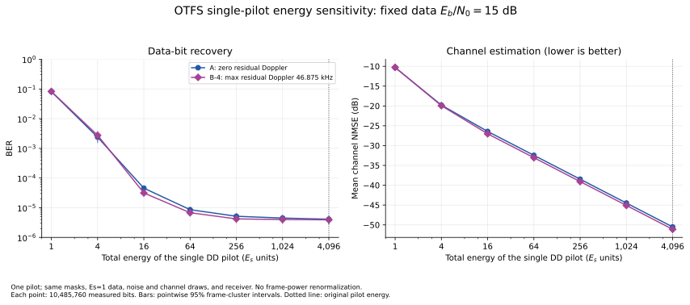

파일럿 1개를 유지하고 총 파일럿 에너지를 4,096·1,024·256·64·16·4·1 Es로 변경했다. 데이터 Es=1, 데이터 Eb/N0=15 dB, CP 5샘플, 보호·예약칸 4,095개와 데이터 12,288칸은 고정했다.
프레임별 데이터·경로 초기 위상·데이터 구간 잡음·별도 잡음 측정값을 모든 에너지에서 재사용했다. 파일럿 에너지를 바꿔도 잡음 전력과 데이터 에너지를 바꾸거나 프레임 전력을 다시 정규화하지 않았다. 총 전송 에너지가 다른 OTFS 내부의 원인 분리 실험이며, 네 파형의 동일 총에너지 성능 비교가 아니다.
A는 세 경로의 잔여 도플러가 모두 0, B-4는 [0,+46.875,−46.875] kHz이다. 지연 0·2·5샘플과 상대 전력 0·−10·−15 dB의 정규화된 통제 채널을 그대로 사용했다.
각 점 10,485,760비트, 214프레임. 원래 4,096 Es 조건의 오류 수는 기존 실험의 모든 프레임과 일치했다. NMSE는 추정 후 평가에서만 실제 채널을 사용해 계산했다. 수신기에는 실제 지연·도플러·이득이나 실제 잡음 전력을 전달하지 않았다.
B-4에서 파일럿 에너지 4,096→1 Es로 낮췄을 때 오류는 41→864,467개, BER은 3.91006e-06→0.082442, 채널 NMSE는 -51.12→-10.27 dB로 변했다. 고정한 이 모델에서 파일럿 에너지의 감소가 채널 추정 및 복원 성능을 악화시켰음을 확인했다.
한편 256 Es에서도 B-4의 오류는 44개, BER은 4.19617e-06로 원래 측정값 근처였다. 적은 오류 수에서의 작은 차이를 동등성 증명이나 최적 에너지 선정으로 해석하지 않는다. 원래의 매우 큰 파일럿 에너지만으로 낮은 BER 전체가 설명된다는 결론도 내리지 않는다. 현재의 보호영역과 3경로 추정 모델은 그대로 남아 있다.

| 조건 | 파일럿 에너지 (Es) | 오류 수 / 비트 수 | BER | 95% 프레임 구간 | 평균 채널 NMSE (dB) | 지연 3개 복원 성공 프레임 |
|---|---|---|---|---|---|---|
| A | 4,096 | 43 / 10,485,760 | 4.1008e-06 | [2.7199e-06, 5.4817e-06] 오류 발생 프레임 35/214 | -50.510 | 214/214 |
| A | 1,024 | 47 / 10,485,760 | 4.48227e-06 | [3.0476e-06, 5.9169e-06] 오류 발생 프레임 38/214 | -44.493 | 214/214 |
| A | 256 | 54 / 10,485,760 | 5.14984e-06 | [3.6241e-06, 6.6756e-06] 오류 발생 프레임 44/214 | -38.472 | 214/214 |
| A | 64 | 90 / 10,485,760 | 8.58307e-06 | [6.691e-06, 1.0475e-05] 오류 발생 프레임 70/214 | -32.452 | 214/214 |
| A | 16 | 477 / 10,485,760 | 4.54903e-05 | [3.8299e-05, 5.2682e-05] 오류 발생 프레임 157/214 | -26.427 | 214/214 |
| A | 4 | 24,916 / 10,485,760 | 0.00237617 | [0.0014995, 0.0032529] 오류 발생 프레임 209/214 | -19.790 | 206/214 |
| A | 1 | 852,448 / 10,485,760 | 0.0812958 | [0.075868, 0.086723] 오류 발생 프레임 214/214 | -10.318 | 97/214 |
| B-4 | 4,096 | 41 / 10,485,760 | 3.91006e-06 | [2.7088e-06, 5.1114e-06] 오류 발생 프레임 37/214 | -51.116 | 214/214 |
| B-4 | 1,024 | 42 / 10,485,760 | 4.00543e-06 | [2.8246e-06, 5.1863e-06] 오류 발생 프레임 39/214 | -45.098 | 214/214 |
| B-4 | 256 | 44 / 10,485,760 | 4.19617e-06 | [2.9977e-06, 5.3946e-06] 오류 발생 프레임 41/214 | -39.077 | 214/214 |
| B-4 | 64 | 71 / 10,485,760 | 6.77109e-06 | [5.1022e-06, 8.44e-06] 오류 발생 프레임 55/214 | -33.056 | 214/214 |
| B-4 | 16 | 329 / 10,485,760 | 3.13759e-05 | [2.5752e-05, 3.7e-05] 오류 발생 프레임 130/214 | -27.026 | 214/214 |
| B-4 | 4 | 28,845 / 10,485,760 | 0.00275087 | [0.0016649, 0.0038368] 오류 발생 프레임 207/214 | -19.932 | 207/214 |
| B-4 | 1 | 864,467 / 10,485,760 | 0.082442 | [0.077287, 0.087597] 오류 발생 프레임 214/214 | -10.267 | 81/214 |
NMSE는 프레임별 선형 오차비를 평균한 뒤 dB로 변환했다. BER 신뢰구간은 기존과 같은 프레임 기준 근사 CR1 방식이며 동시 신뢰대역은 아니다. 오류 미관측 시 빈 삼각형의 1/N 위치는 표시용이고, 보수적 상한은 표에 별도로 보고한다.
이 실험은 파일럿 에너지의 효과만 분리한다. 보호영역·격자 정렬·3경로 추정 모델의 영향이나 OFDM과의 전체 BER 격차의 원인을 모두 설명한 것으로 해석하지 않는다.